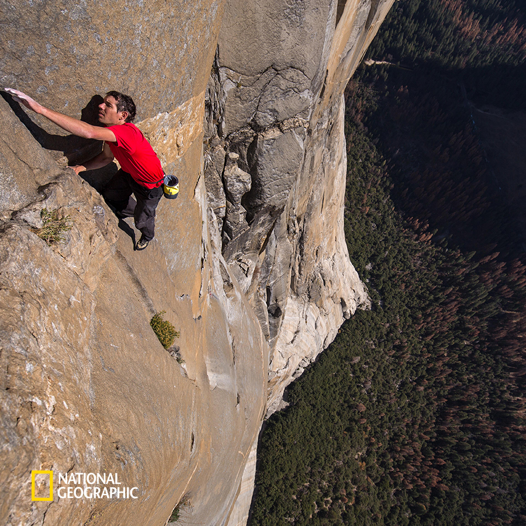
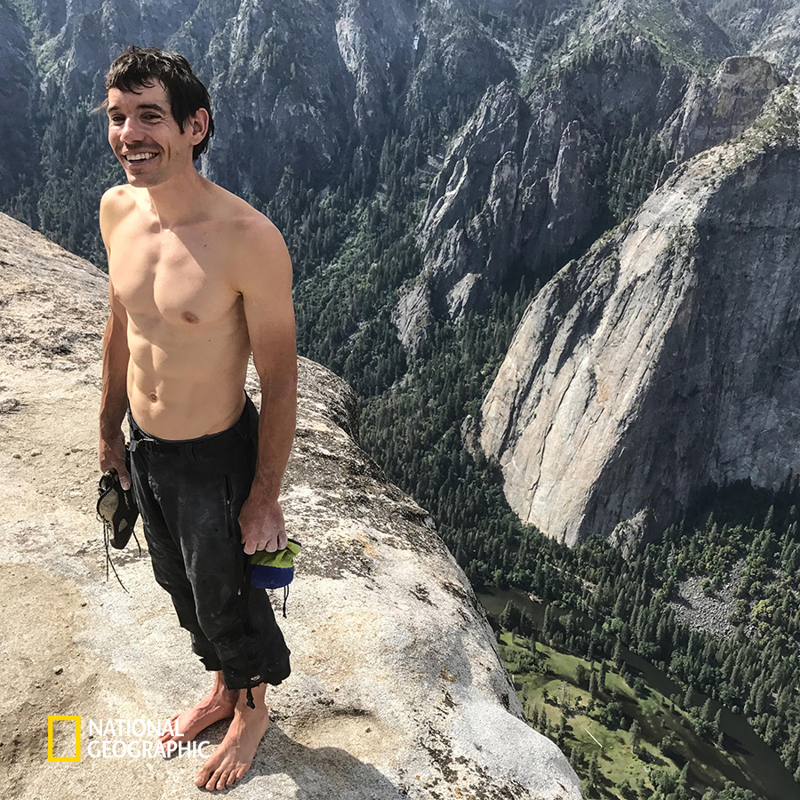
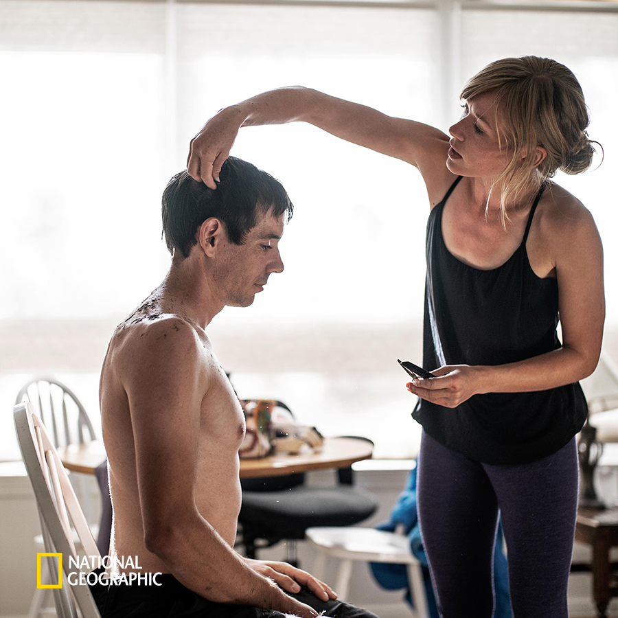
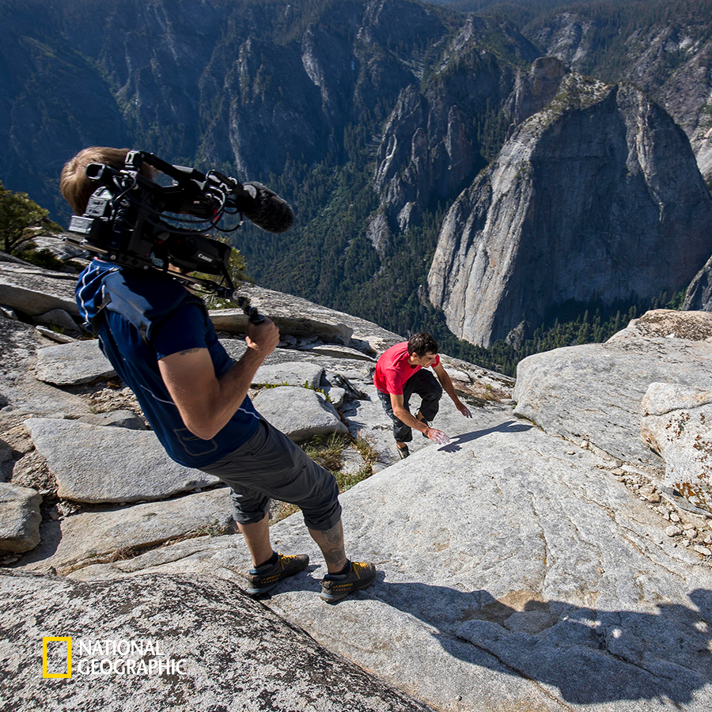
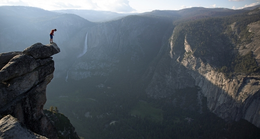
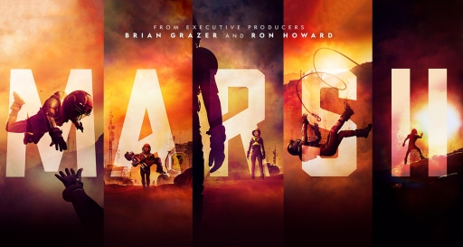
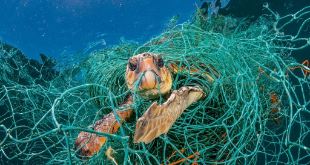
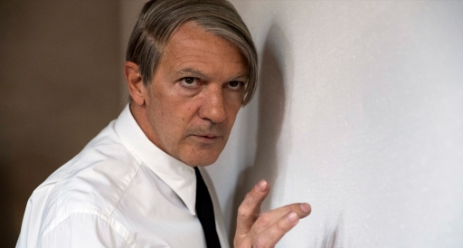
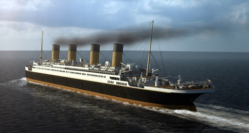

NEWS
맨몸으로 절벽을 오르는 등반가, 알렉스 호놀드의<프리솔로>
4월 12일(금) 밤 11시 방송
저는 위험도와 결과를 구분하려고 해요.
제가 이룰 결과의 무게는 어마어마하지만, 떨어질 확률은 낮다고 생각하며 프리솔로에 임하죠.
그게 프리 솔로의 매력이에요.
어렵고 위험해 보이지만, 안심하고 도전할 수 있죠.
- 알렉스 호놀드
지난 25일 미국 로스엔젤레스에서 열린 제 19회 아카데미 시상식에서 ‘장편 다큐멘터리 상’을 받은 내셔널지오그래픽의 <프리 솔로>가 4월, 내셔널지오그래픽 채널로 찾아온다. 다큐멘터리 부문에서 아카데미 수상을 한 산악영화는 <프리솔로>가 처음이다.
영화의 제목이자 알렉스 호놀드(33세)가 도전한 ‘프리솔로’란, 로프나 어떠한 보호 장구 없이 맨몸으로 산을 오르는 것을 뜻한다. 등반가 알렉스는 오로지 자신의 손끝과 신발의 마찰력에 의지한 채 1000m에 달하는 높이의 암벽을 오른다.
프리 솔로를 하는 당일을 위해 알렉스는 수많은 예행연습을 거친다. 같은 루트로 최소 몇 십번은 오르내리며 어느 지점에서 어떤 움직임을 선택해야 하는지를 끊임없이 계산하고 익힌 그는, 프리 솔로로 도전할 생각을 하지 못했던 요세미티의 엘 캐피탄을 오를 준비를 마친다.
작은 한 번의 실수조차 용납할 수 없는 상황이기에, 그는 더욱 준비에 만반을 기한다. 그가 엘 캐피탄 정상에 오르는 데에 걸린 시간은 3시간 56분이지만, 그가 전 세계의 암벽을 찾아다니며 훈련한 시간은 약 1년이 넘는다. 거의 4시간 동안 엘 캐피탄 솔로잉을 끝낸 직후 '행 보드 (손가락 힘만으로 매달리는 훈련)'를 연습하는 그를 보면 프리 솔로 가 그에게 어떤 존재인지 알 수 있다.
프리솔로는 영화가 진행되는 내내 알렉스가 정상에 오른 순간보다 오르기까지 솔로잉을 준비하며 느끼는 감정에 집중한다. 자신의 어머니, 여자친구, 그리고 지인들과 이야기하는 모습들을 통해 그가 느끼는 불안감과 두려움을 어느 정도 해소하는 모습을 볼 수 있다.
보기만 해도 아찔한 암벽 등반을 계속하는 이유 중 하나로 알렉스는 '헤어 나올 수 없는 자기혐오'를 꼽았다. 그는 영화 속 인터뷰에서 자신의 어머니께서 '잘 하는 건 소용없고 완벽만이 중요하다'라고 강조하셨다며, 자신은 아무리 잘해도 인정받지 못한다고 전했다.
영화 <프리솔로>에서는 단순히 알렉스가 등반하는 과정만 보여주는 것이 아니라, 알렉스의 모습을 가장 가까이서 세세하게 담는 카메라맨들의 고충도 함께 담는다. 촬영팀은 “멋지게 촬영하고 싶지만, 알렉스가 원하는 경험을 하도록 방해하지 않는 게 제일 중요하다”라고 전하며 알렉스가 위험에 빠지지 않도록 최선을 다하는 촬영팀의 모습을 보여준다.
혼자 죽는 건 괜찮지만, 친구 머리 위로 떨어지는 참사는 일어나지 않길 바란다는 알렉스 호놀드. 보기만 해도 손에 땀을 쥐게 하는 알렉스의 아찔한 등반은 오는 4월 12일(금) 밤 11시, 내셔널지오그래픽 채널에서 만나 볼 수 있다.
ALL NEWS
-

맨몸으로 절벽을 오르는 등반가, 알렉스 호놀드의<프리솔로>
4월 12일(금) 밤 11시 방송
-

인류의 새로운 시작, 그 두번째 이야기
<마스Ⅱ> 11월 17일(토) 밤 11시 첫 방송
-

일회용 플라스틱 사용 줄이기 캠페인!
PLANET OR PLASTIC : 당신의 선택은?
-

안토니오 반데라스 주연, 천재 화가 파블로 피카소의 러브 앤 라이프!
<지니어스Ⅱ: 파블로 피카소> 7/4(수) 밤 11시 첫 방송
-
세계적인 배우 윌 스미스, 그의 목소리로 듣는 푸른 행성 지구의 모든 것!
우주인, 지구를 말하다 <원 스트레인지 락> 매주 (토) 밤 11시 본방송
-

내셔널지오그래픽 탐험가 제임스 카메론이 전하는 타이타닉의 비밀!
<타이타닉> 개봉 20주년 기념 특집 편성